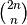
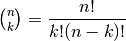

Lattice paths¶
Problem 15
Starting in the top left corner of a 2×2 grid, there are 6 routes (without backtracking) to the bottom right corner.
*********
| | *
+---+---*
| | *
----|---v
*****----
| * |
+---*****
| | *
----|---v
*****----
| * |
+---*---+
| * |
----****>
*---+----
* | |
*********
| | *
----+---v
*---+----
* | |
*****---+
| * |
----****>
*---+----
* | |
*---+---+
* | |
********>
How many routes are there through a 20×20 grid?
Solution
Step 1: Generate the Paths¶
The route through a grid contains a mixture of “R” and “D” steps. In a 2x2 grid, there must be 2 R’s and 2 D’s to go right and down.
There are 4! permutations of R and D, but only 6 paths through a 2x2 grid. Because the R’s and D’s are indistinguishable, there are 18 permutations which map to the 6.
Other view
- rt’s in positions 0-19; dn’s in positions 20-39
- rt’s in positions 0-18 and 20; dn’s in 19 and positions 21-39
- ...
- rt’s in positions 0,2,4,...,38; dn’s in positions 1,3,5,...,39
2x2 case
- rt ( 0, 1 ) -: dn ( 2, 3 ) == ( rt, rt, dn, dn )
- rt ( 0, 2 ) -: dn ( 1, 3 ) == ( rt, dn, rt, dn )
- rt ( 0, 3 ) -: dn ( 1, 2 ) == ( rt, dn, dn, rt )
- rt ( 1, 2 ) -: dn ( 0, 3 ) == ( dn, rt, rt, dn )
- rt ( 1, 3 ) -: dn ( 0, 2 ) == ( dn, rt, dn, rt )
- rt ( 2, 3 ) -: dn ( 0, 1 ) == ( dn, dn, rt, rt )
import collections
def generate( n ):
rt_pos= list(range(n))
i= n-1 # position at which we are counting
yield rt_pos
while True:
if rt_pos[i] + 1 == 2*n:
if i == 0:
break
i = i-1
while i >= 0 and rt_pos[i] + 1 >= n+i+1:
i = i - 1
if i == -1:
break
rt_pos[i] += 1
for j in range(i+1,len(rt_pos)):
rt_pos[j]= rt_pos[j-1]+1
i= n-1
yield rt_pos
else:
rt_pos[i] = rt_pos[i] + 1
yield rt_pos
def study():
for g in generate(2):
print( g )
counts = collections.defaultdict(int)
for g in generate(4):
counts[g[0]] += 1
print( g )
print( counts )
4x4 case results:
[0, 1, 2, x] 5 examples
[0, 1, 3, x] 4
[0, 1, 4, x] 3
[0, 1, 5, x] 2
[0, 1, 6, 7] 1
[0, 2, 3, x] 4, etc. for 3, 2, 1
[0, 3, 4, x] 3, etc. for 2, 1
[0, 4, 5, x] 2, 1
[0, 5, 6, 7]
subtotal = 35. Mirror image = 35 more. Total 70.
This will be slow to generate for 20×20 case.
Step 2: Generalize the Results¶
Paths in an lattice is .
def paths( n ):
"""
>>> from euler15 import paths
>>> paths(2)
6
>>> paths(4)
70
"""
return combinations(2*n,n)
Number of combinations of n things taken k at a time, 
def combinations( n, k ):
"""
>>> from euler15 import combinations
>>> combinations(4,2)
6
>>> combinations(8,4)
70
"""
assert k <= n
def fact(a):
if a == 0: return 1
return a*fact(a-1)
return fact(n)//( fact(k)*fact(n-k) )
Test module components.
def test():
import doctest
doctest.testmod(verbose=0)
Compute the answer.
def answer():
return paths(20)
Confirm the answer.
def confirm(ans):
assert ans == 137846528820, "{0!r} Incorrect".format(ans)
Create some output.
if __name__ == "__main__":
#study()
test()
ans= answer()
confirm(ans)
print( "Number of routes are there through a 20×20 grid:", ans )